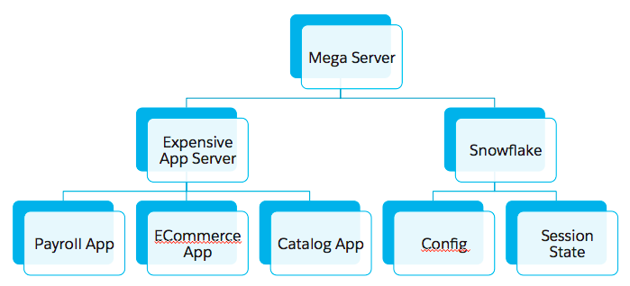

James Ward | @_JamesWard
Platform Evangelist @ Salesforce.com
A single block or piece of stone of considerable size
Microservices are the components of a monolithic system decoupled by TCP/IP.
organizations which design systems ... are constrained to produce designs which are copies of the communication structures of these organizations
Decouple: Teams & Deployment & Operations
| Imperative | Functional |
|---|---|
|
|
val helloWorld = { request: Request[AnyContent] =>
Ok("hello, world")
}
val index = Action(helloWorld)case class Bar(name: String)
val barWrites = Json.writes[Bar]
val bar = Action {
val myBar = Bar("my bar")
Ok(Json.toJson(myBar)(barWrites))
}AND
OR
Spot the mutation:
List<Foo> foos = dbService.getFoos();
doSomething(foos);
calcSomething(foos);
foos = updateFoos(foos);You can't mutate memory over a network boundary.
val foos = dbService.getFoos()
val newFoos = updateFoos(foos)val bar = Action.async {
wsClient.url("http://localhost:8000/bar").get().map { response =>
Ok(response.json)
}
}Reach out: @_JamesWard